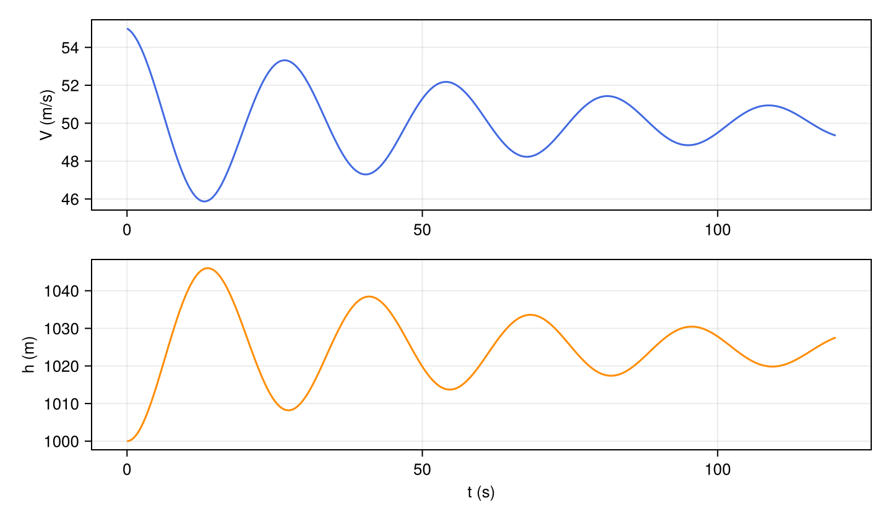

The aircraft
In this chapter you write the aircraft the tutorial flies. It is a rigid airplane moving in its plane of symmetry, with five states and two controls. You write it as a component, run it for two minutes from an airspeed above trim, and watch its slow mode, the phugoid, trade speed for height every 27 seconds.
The equations
The aircraft has three degrees of freedom. It moves along two axes and rotates in pitch. The earth is flat, the air still and its density constant. The states are the airspeed $V$, the flight path angle $\gamma$, the pitch angle $\theta$, the pitch rate $q$ and the altitude $h$. The aerodynamics read the angle of attack $\alpha = \theta - \gamma$. The controls are the elevator $\delta_e$, in radians and positive trailing edge down, and the throttle $\delta_t$, from 0 to 1.
Lift and drag follow a linear lift curve and a parabolic polar. The pitching moment has a static term, a damping term and an elevator term. The thrust is a fraction of a fixed maximum, along the body axis. With the dynamic pressure $\bar q = \tfrac12 \rho V^2$, the forces and the moment are
\[\begin{aligned} L &= \bar q S (C_{L0} + C_{L\alpha}\alpha) & D &= \bar q S (C_{D0} + k C_L^2) \\ M &= \bar q S \bar c \left(C_{m0} + C_{m\alpha}\alpha + C_{mq}\frac{q \bar c}{2V} + C_{m\delta_e}\delta_e\right) & T &= \delta_t T_{max} \end{aligned}\]
and the equations of motion are
\[\begin{aligned} \dot V &= (T\cos\alpha - D)/m - g\sin\gamma \\ \dot\gamma &= (L + T\sin\alpha)/(m V) - g\cos\gamma / V \\ \dot\theta &= q \\ \dot q &= M / I_{yy} \\ \dot h &= V \sin\gamma \end{aligned}\]
The parameters are those of a light single-engine aircraft. Their values and the assumptions behind these equations are in the aircraft's companion.
The component
A component is a Julia type, a subtype of AbstractComponent, that adds methods to the framework's functions. Each method declares one thing. x_init names the continuous state and its default values. u_types and y_types name the input and output ports and their types. y_state computes the outputs from the state, and x_deriv the state's derivative from the state and the inputs. A component with a continuous state and no children is a continuous primitive. Every output here depends on the state alone, so the aircraft needs no other output function.
using Redstone
import Redstone: AbstractComponent, x_init, u_types, y_types, y_state, x_deriv
const g = 9.81
@kwdef struct Longitudinal <: AbstractComponent
m::Float64 = 1000.0
S::Float64 = 16.0
c̄::Float64 = 1.5
Iyy::Float64 = 1800.0
T_max::Float64 = 2500.0
ρ::Float64 = 1.225
CL0::Float64 = 0.3
CLα::Float64 = 5.0
CD0::Float64 = 0.03
k::Float64 = 0.05
Cm0::Float64 = 0.05
Cmα::Float64 = -1.0
Cmq::Float64 = -12.0
Cmδe::Float64 = -1.2
end
x_init(::Longitudinal) = (V = 50.0, γ = 0.0, θ = 0.0, q = 0.0, h = 1000.0)
u_types(::Longitudinal) = (δe = Float64, δt = Float64)
y_types(::Longitudinal) = (V = Float64, γ = Float64, θ = Float64, q = Float64, h = Float64, α = Float64)
y_state(::Longitudinal, (; x)) = (V = x.V, γ = x.γ, θ = x.θ, q = x.q, h = x.h, α = x.θ - x.γ)
function x_deriv(plant::Longitudinal, (; x, u))
(; V, γ, θ, q) = x
α = θ - γ
q̄ = 0.5 * plant.ρ * V^2
CL = plant.CL0 + plant.CLα * α
Cm = plant.Cm0 + plant.Cmα * α + plant.Cmq * q * plant.c̄ / (2V) + plant.Cmδe * u.δe
lift = q̄ * plant.S * CL
drag = q̄ * plant.S * (plant.CD0 + plant.k * CL^2)
moment = q̄ * plant.S * plant.c̄ * Cm
thrust = u.δt * plant.T_max
(V = (thrust * cos(α) - drag) / plant.m - g * sin(γ),
γ = (lift + thrust * sin(α)) / (plant.m * V) - g * cos(γ) / V,
θ = q,
q = moment / plant.Iyy,
h = V * sin(γ))
endx_deriv (generic function with 8 methods)Each line of the returned value is one equation of motion.
The model
A model is a tree of components with one root. The aircraft sits under a Group, an assembly that names its children and wires them. Here the group has one child, plant, and hands it the group's own inputs δe and δt, the model's root inputs. Every later read addresses the aircraft by the path "plant".
import Redstone: Group
aircraft() = Group((; plant = Longitudinal());
input_wires = ("δe" => "plant/δe", "δt" => "plant/δt"))aircraft (generic function with 1 method)The run
A Simulation runs the model in frames. At each frame top it publishes a snapshot of every port, and the log keeps them. The frame period Δt_frame is the one quantity the run cannot do without. By default the integrator takes one step per frame. The period is exact, a Rational such as 1//100, and a float is refused with the reason:
julia> import Redstone: Simulationjulia> Simulation(aircraft(); Δt_frame = 0.01)ERROR: DiagnosticError: 1 diagnostics DeploymentInvalid: `Δt_frame` must be exact — an integer or a Rational (`Δt_frame = 1//100`): grid derivation is GCD arithmetic, ill-defined over floats (§9.1, §10.5)
The run starts from a condition, the values to set before the first frame. set writes values, at places them under a path, and combine joins conditions. A condition may write part of a state. The states it does not name keep the values x_init declares, here level flight at 50 m/s and 1000 m. The root inputs have no default, so the condition must give both.
Level flight at 50 m/s needs a pitch angle of 0.019930 rad, an elevator of 0.025058 rad and a throttle of 0.37234. Chapter 2 computes these numbers. Here the aircraft starts at those controls and that pitch, but 5 m/s too fast. init! sets the condition and run! runs to t_end.
import Redstone: set, at, combine, init!, run!
off_trim = combine(at("plant", set(x = (V = 55.0, θ = 0.019930))),
set(u = (δe = 0.025058, δt = 0.37234)))
sim = Simulation(aircraft(); Δt_frame = 1//100)
init!(sim, off_trim)
run!(sim; t_end = 120.0)The phugoid
series gathers the log into columns, one per entry of a read set. Each entry is a selector, here get_output of a port by path and name. The log holds one snapshot per frame. The result holds the snapshots' times t, and each column reads under its label, so flight.V is the airspeed at each one.
import Redstone: series, reads, get_output
using CairoMakie
flight = series(sim, reads(V = get_output("plant", :V), h = get_output("plant", :h)))
fig = Figure()
lines(fig[1, 1], flight.t, flight.V; color = :royalblue, axis = (; ylabel = "V (m/s)"))
lines(fig[2, 1], flight.t, flight.h; color = :darkorange, axis = (; xlabel = "t (s)", ylabel = "h (m)"))
fig
The aircraft climbs as it slows and dives as it speeds up. The period is the time between two upward crossings of the trim airspeed.
V = flight.V
upward = [flight.t[i] for i in 2:length(V) if V[i - 1] < 50.0 ≤ V[i]]
(snapshots = length(V), V = extrema(V), h = extrema(flight.h), periods = diff(upward))(snapshots = 12001, V = (45.872032471976055, 55.0), h = (1000.0, 1046.016367216492), periods = [27.330000000000002, 27.33, 27.33])The log holds 12 001 snapshots over the two minutes. The airspeed swings between 46 and 55 m/s, the altitude rises 46 m above the start, and the period is 27.3 s. Chapter 3 finds the period again from the linearized model.
The package's aircraft
The examples package, RedstoneExamples, ships this chapter's model. Its aircraft() flown from the same condition gives the same flight, to the bit.
import RedstoneExamples
package_sim = Simulation(RedstoneExamples.aircraft(); Δt_frame = 1//100)
init!(package_sim, off_trim)
run!(package_sim; t_end = 120.0)
package_flight = series(package_sim, reads(V = get_output("plant", :V), h = get_output("plant", :h)))
(package_flight.V, package_flight.h) == (flight.V, flight.h)trueTo start from this chapter's end, import the aircraft and its model:
import RedstoneExamples: Longitudinal, aircraft